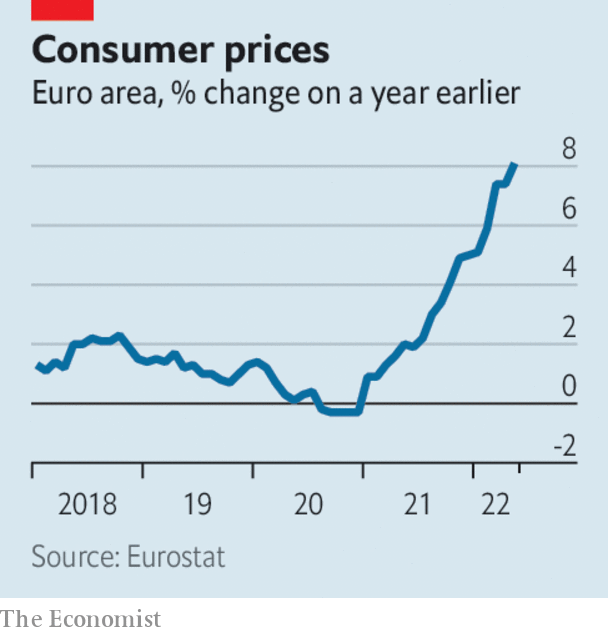

The euro zone’s annual inflation rate leapt to 8.1% in May. The European Central Bank is expected to raise interest rates for the first time in a decade in July and again in September. Surging prices may mean that it will opt for bolder increases than currently envisaged, perhaps of half a percentage point.